Introduction
如果图G中的一个路径包括每个边恰好一次，则该路径称为欧拉路径(Euler path)。
如果一个回路是欧拉路径，则称为欧拉回路(Euler circuit)。
具有欧拉回路的图称为欧拉图（简称E图）。具有欧拉路径但不具有欧拉回路的图称为半欧拉图。
Application
欧拉回路的环扩展算法
Introduction
Ex：POJ1392：Ouroboros Snake【欧拉回路】
简要题意：
构造一个$2^n$位的循环数组，满足：
每次从中截取n位，能够遍历所有的n位2进制数。
如：
0110数组，将遍历：01，11，10，00。
可以采用DFS的方法。
@欧拉回路：
每个点的入度=出度，则该图存在欧拉回路。
示例：（4阶图）
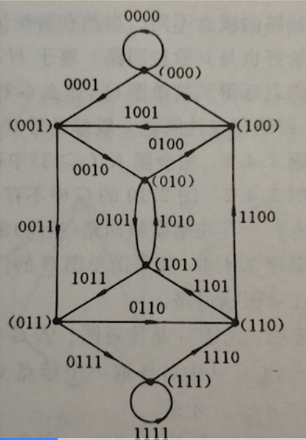
实际测试
先看dfs放在前和后的实际效果。（以n=3为例）
如下图所示：
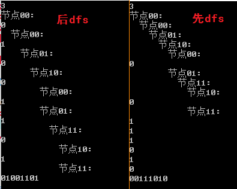
使用的测试代码
1 | //allOne = 2^(n-1) - 1 = 100.. - 1 = 0111.. |
测例分析
对本题基本的分析
声明：以下的所有讨论，除非特殊说明，“环”均不包括一个点的自环。（即，忽略
000..和111..的自环）
我们建立n=3时的欧拉图。
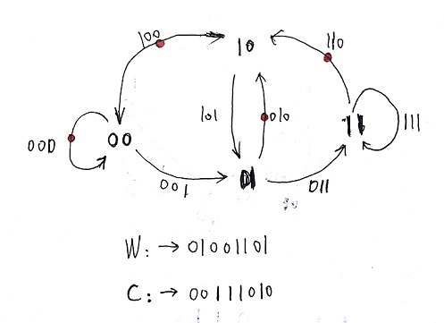
可以看到
两者点的遍历顺序一致。
对于后DFS[先记录]，它的性质是真正的DFS。
观察序列W(Wrong)：01001101，可以看到从
00点开始，先搜索自己【000边】，再搜索001边，接着从01点继续深度搜索10点……此时，因为是先记录，可能会提前成环。即：路径
0100。（DFS返回了00点）而本题的子环是相当密集的。DFS最终形成的是一棵搜索树。
考虑DFS过程中可能出现的Backward边（子->父），即可扩展定义环。
联想忒修斯的绳索。这里从略。
对于前DFS[后记录]，它的性质才是欧拉图所要求的。这里称为“环扩展算法”。
观察序列C(Correct)：00111010。
第一个环：
00-01-10-00，第二个环：01-11-10-01。我们发现一个奇妙的性质：
对于n=3的欧拉图，整个欧拉图可以被分为两个环的(无重复)复合。
……我们是否可以推广这个结论呢？
验证、推广
给出n=4时的“环扩展算法”：
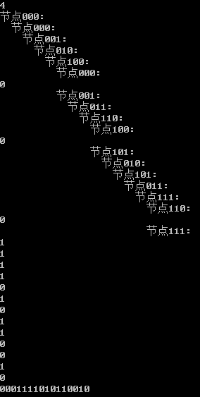
从图中我们可以直观地得到n=4欧拉图被分成了3个子环。
最终理论
我们可以继续做更高阶的测试。
n=5，类似的，分成4个子环。
n=6，5个子环。
……
从中我们可以得出一个重要推论：
N欧拉状态图可以被分为N-1个子环。
环扩展算法有效的原理
回到n=3时的欧拉图。
第一个环：00-01-10-00，第二个环：01-11-10-01。
规律：
1.从
00点出发(忽略自环)。2.采取的策略——每次尽可能取0。
该策略能保证，每次的路线总能回到出发点。
【这样的保证是直接由欧拉图的性质决定的，因为：所有点的出/入度为偶数，起点必为终点。】
（不严格的）证明：【需改进】
对于任意一个n位二进制序列。
从
000..(n-1)节点开始（忽略自环） 初始序列
000..01(n)，左移。尽可能补0。 序列中仅含1个
1。显然，经n步可回至初始状态。从图中移除所有已遍历的边，更新欧拉图。即，将第一个环等效地缩并为
000..01(n-1)节点的自环。
000..01(n-1)节点将成为新的初始节点。 初始序列
000..011(n)，左移。尽可能补0。……
共n-1轮。
实际上，以上的思路可以按欧拉图的性质简化为：
每轮都能成环，而更新的欧拉图（从图中去掉本轮的环）仍然具有欧拉图的性质，因此最终一定会遍历所有边。
加上两次自环：
000..0(n)和111..1(n)。此时所有n位2进制数被遍历。（假装）证毕233。
而且由于对称性，我们可以预测，第
i个环和第n-i个环的长度是相同的。
分析：
对于n=3的情况（如上图），该过程可以描述为：
- 从
00点出发，先0自环，然后1到达01，接着0-0回到00。00点没有出路，顺移到其后继01点，继续，1-0-0回到01。此时遍历了所有边。- 由于两个子环互不干扰，可以按以下逻辑复合：
- 第一个环：
00-01-10-00，根据第二个环，可以展开01节点，用第二个环替代。（由于自环的展开是平凡的，这也成为我们忽略自环的一个原因）- 最终复合为：
00-01-11-10-01-10-00。Plus. 联想Graham扫描算法，内在逻辑似乎很相似。
解的不唯一性-展开节点
由于每一次的展开是不唯一的（可以从环的不同节点展开），可以预见到解法的不唯一性。环扩展算法只是找到了其中一种。
比如：（n=3）
- 第一个环：
00-01-10-00，第二个环01-11-10-01可以等效地看作10-01-11-10，于是也可以展开10节点，用第二个环替代。- 最终复合为：
00-01-10-01-11-10-00。
改进
修改策略
将原来测试代码的“兵分两路”修改为逆向循环：
1 | for(int i = 1; i >= 0; --i) //兵分两路 |
即，采用新策略：
每次尽可能取1。
可以发现一个非常奇妙的现象，如下图：（n=3）
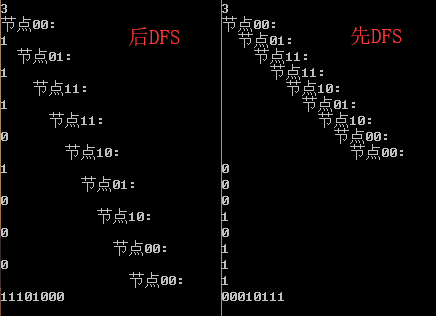
我们可以继续测试：
n=4
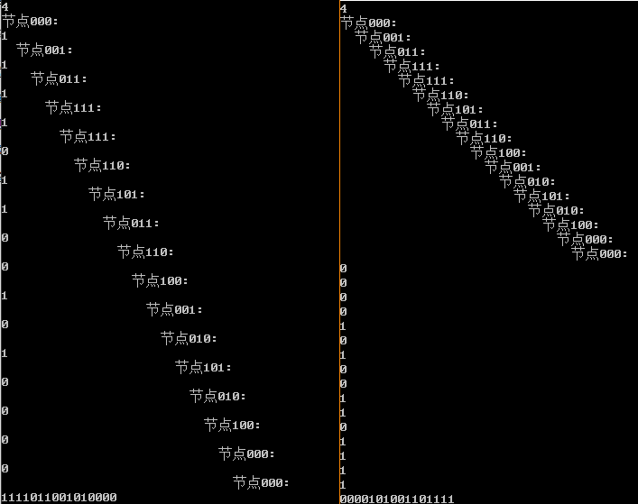
以及更高阶。（此处省略）
首先抛出结论：
对于新策略：
每次尽可能取1。
前DFS（真）和后DFS（环扩展）的结果都是正确的，其结果是相反的。
（不严格的）证明：
对于每次尽可能取1的策略，我们可以合理地预测当所有路径没有被完全经历时，不可能提前回到
000..节点。因为：尽可能取1，意味着通向
000..节点的0策略边必定是最后执行。这样的分析可以推广到每一个节点：
对于$\forall$节点，其指向外界的
0策略边必定是最后执行的。从而证明了结论。
此时，可能会更加体会到两种方法（前/后）的根本区别。
这样的结果意味着什么呢？
分析
回到n=3，如下图：
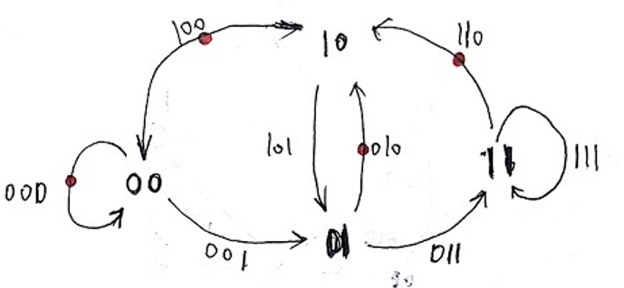
我们来分析到底发生了什么。（也可以尝试自己先分析一下）
先给出每次尽可能取0的环扩展的线路图。红圈处为展开节点。绿圈为第1个环，粉圈为第2个环。
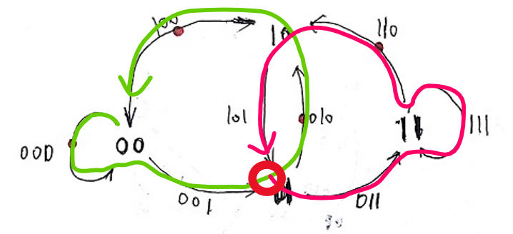
再给出每次尽可能取1的DFS的线路图。（两种方法的线路一致）
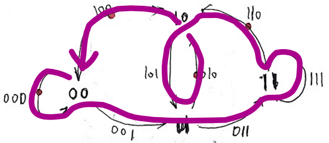
事实上，此时，DFS将一次就找到欧拉回路！因此前、后是等效的！
这两种策略的DFS对子环的划分是不同的。
对于每次尽可能取1的策略，其线路图可以等效地看作下图的一个划分【紫圈+蓝圈】。
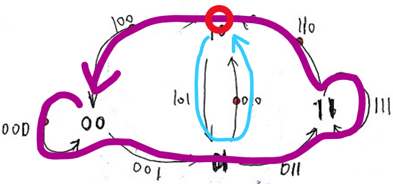
解的不唯一性-子环划分
事实上，对于n=3，在之前已经找到了两种路线：
00-01-11-10-01-10-00。（展开节点01）00-01-10-01-11-10-00。（展开节点10）
若考虑子环划分的不同，我们将新增两种路线：（【紫+蓝】图）
00-01-11-10-01-10-00。（展开节点10）00-01-10-01-11-10-00。（展开节点01）
容易看到，1、2与对应新增的3、4是完全一致的。这侧面映证了我们改进的思路是正确的。
此时，不同的子环划分，能够得出相同的多解。
仍然保证解的不唯一性。
拓展
更改初始节点
尝试进一步将原来测试代码的dfs初始节点设置为其他节点：
1 | dfs(1); |
可以观察到以下：（n=3）
dfs(1);
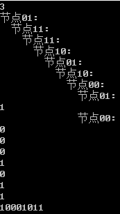
dfs(2);
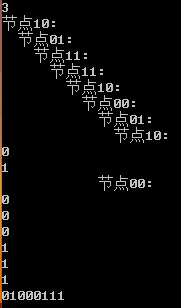
dfs(3); （结合环扩展算法的
0优先策略，可以发现极强的对称性）
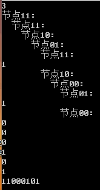
无论从哪个节点出发，均可以得到解！（更高阶不再赘述）
Plus. 不修改策略，也可以得到相同的结论。（但方法必须是环扩展，不是平凡~）
因此，
修改策略的实质是利用了0和1的对称性。
重要启发
但，这给了我们另一个重要的启发。
我们对所有n的情况，统一设置111..11节点为初始点。即
dfs($2^{n-1}-1$);
例如，n=3：
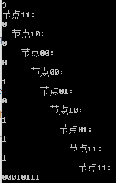
此时，平凡的DFS算法，又将得到正确解！
总结
采用前DFS的根本原因是：
本题的欧拉图是多环的。（此处，忽略
000..和111..的自环）搜索的迭代起始点是
000..（111..等效），抗局部环干扰能力极弱。（只有1次进出机会）
由于欧拉图多环，深度优先搜索不一定能在第一次就找到能遍历所有节点的环。
而我们的目的是：
找到遍历所有节点、边的广义环。
因此，必须排除一切的局部环。
借助本题欧拉图的性质：
N欧拉状态图可以被划分为N-1个子环。（“划分”就是不多不少的分割）
或，N欧拉状态图可以被划分为N-1个环+2个自环。【考虑自环】
利用基于DFS改良的环扩展算法，即可求解N欧拉状态图。（多次复合）
利用基于策略的改进或更改初始节点，可以使得平凡的DFS算法也能得到正确解。（一次成功）
Reference
欧拉回路（百度百科）
uoj #117. 欧拉回路 圈套圈算法求欧拉回路